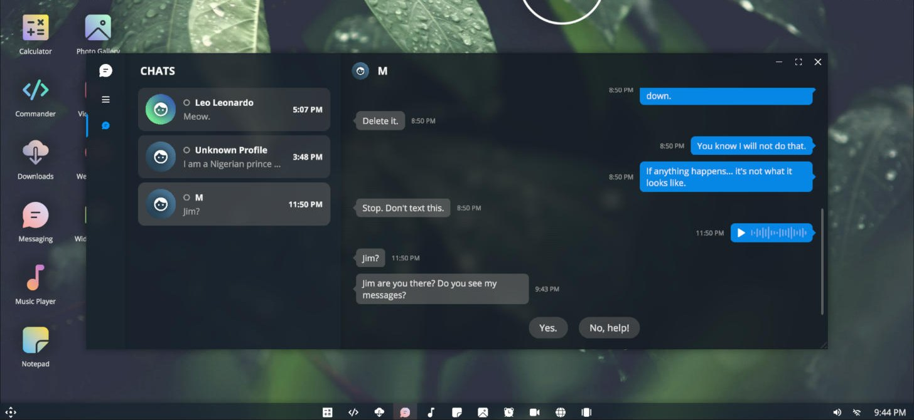
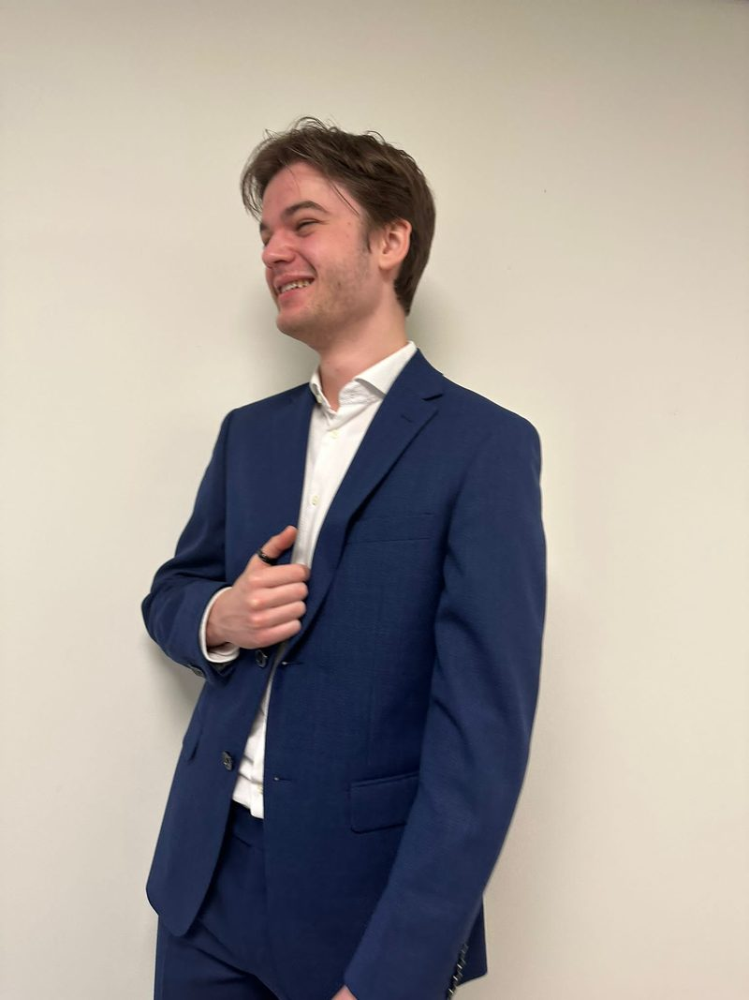

Technical Game Designer
& developer.
I'm Nathaniël, a 4th-year CMGT student in the Game Design & Development minor. I design gameplay systems, and then I build playable prototypes myself in Unity, Godot and C# to prove that an idea works in practice, not just on paper.
Case studies
Each page covers the design problem, the systems I built, how they were tested and tuned, and what I would change next time.
 Released · Google Play & itch.io
Released · Google Play & itch.io
Fall 'n Fashion
A puzzle-runner where you fall from the sky and have to work out the right outfit before you land. I programmed core gameplay, the globe level select and the procedurally generated worlds: a data-driven generator with a logarithmic difficulty curve and seeded, deterministic levels.
- Systems design
- Procedural generation
- ScriptableObjects
- C#
 Beta · Android
Beta · Android
Conquest Rush
March from the Bronze Age to the Atomic Age and capture 15 bases in one run. Counter-based armies, a perk tree, bosses and meta-progression.
- Strategy
- Balancing
- Live updates
 Work in progress
Work in progress
Project Implant (working title)
My current minor project: a first-person horror game where an implant decides what you see. Invisible enemies, a "reality flash" and a detection system built to stay fair.
- Stealth systems
- Level design rules
- GDD

CMGT ShowcaseJIM
An escape room on your own laptop. You explore a missing journalist's simulated computer and cross-reference it with real, physical evidence.
- Puzzle design
- Narrative
- Unity UI
Idea → prototype → proof
I don't hand over a design and hope it works. I build it, play it and tune it. My background in full-stack development means I can take a prototype all the way to working code.
Prototype the question
Every design question gets a playable answer. In Fall 'n Fashion I built the world generator and tuned the difficulty curve in code. In Project Implant I'm prototyping the stealth and detection rules to test whether they feel fair.
Ship real features
During my internship at WebinarGeek I delivered a complete new feature to a live product: the simulated viewer count.
Build tools for the team
Inspector-driven ScriptableObjects, editor menus and hidden cheat panels, so designers and testers can change and reach content without touching code.
Designer who can build
Gameplay & systems design
- Core loops, progression and difficulty curves
- Fair rule sets, e.g. stealth detection and hazards
- Tuning through playtests and data
- Design documents: GDDs, 10-pagers, technical designs
Development
- Unity & C#: data-driven, modular, Inspector-friendly
- Godot, Unreal Engine (VR), Excalibur.js
- Seeded procedural generation, UI systems, tooling
- Web: JavaScript, PHP/Laravel, React, REST APIs, WCAG
Puzzles & narrative
- Puzzle chains that cross between digital and physical
- Environmental storytelling in UI and fake operating systems
- Onboarding and in-level tutorials
- Also: Blender, Photoshop, video editing
Work & education
-
2026 · Freelance assignment
Skunx Studios · Game developer
Improved and expanded JIM, and adapted it to Skunx Studios' own IP. Details are under NDA for now.
-
Sep 2025 – Feb 2026 · Internship
WebinarGeek · Software development intern
Successfully delivered a complete new feature in a live product: the simulated viewer count.
-
School client project
IO Digital · Accessibility lead (Open Hiring)
Brought pages up to WCAG AA (some to AAA) in a Laravel platform, and built a feature that shows local companies near the user.
-
Sep 2021 – Apr 2023
VR4Play · VR host
Guided customers renting VR headsets, and repaired and maintained the headsets.
- Sep 2023 – presentBSc Creative Media & Game TechnologiesHogeschool Rotterdam · Minor Game Design & Development
- Sep 2022 – Jul 2023BSc Computer Science (Informatica)Hogeschool Rotterdam
- Sep 2021 – Jul 2022BSc Mechanical EngineeringDelft University of Technology
- 2015 – 2021VWOWolfert Lyceum, Bergschenhoek
Languages: Dutch (native), English (C1), French (B1)

Hi, I'm Nathaniël
I'm a 4th-year Creative Media & Game Technologies (CMGT) student at Hogeschool Rotterdam, currently in the Game Design & Development minor. I started out building web applications. That's why I like to build my own prototypes, tools and debug menus instead of waiting for someone else to implement an idea.
I'm happiest when a design question becomes a system I can test: how do you make invisible enemies fair? How do you keep 22-second levels interesting forever? I'm drawn to games where one smart rule creates a lot of interesting decisions.
Based in the Netherlands · Dutch & English
Let's talk
I'm looking for a gameplay / systems design internship in the first half of 2027 (minimum 5 months). I'm happy to share builds, design documents or source code.
Technical Game Designer
& developer.
Ik ben Nathaniël, vierdejaars CMGT-student in de minor Game Design & Development. Ik ontwerp gameplay-systemen en bouw zelf speelbare prototypes in Unity, Godot en C# om te laten zien dat een idee in de praktijk werkt, niet alleen op papier.
Case studies
Elke pagina beschrijft het ontwerpprobleem, de systemen die ik bouwde, hoe ze getest en getuned zijn, en wat ik de volgende keer anders zou doen.
Uitgebracht · Google Play & itch.io
Fall 'n Fashion
Een puzzle-runner waarin je uit de lucht valt en de juiste outfit moet uitvogelen voordat je landt. Ik programmeerde de kern-gameplay, het level select met de wereldbol en de procedureel gegenereerde werelden: een data-driven generator met een logaritmische moeilijkheidscurve en geseede, deterministische levels.
- Systems design
- Procedurele generatie
- ScriptableObjects
- C#
Bèta · Android
Conquest Rush
Trek van de bronstijd naar het atoomtijdperk en verover 15 bases in één run. Legers met counters, een perk-boom, bosses en meta-progressie.
- Strategie
- Balancing
- Live updates
In ontwikkeling
Project Implant (werktitel)
Mijn huidige minorproject: een first-person horrorgame waarin een implantaat bepaalt wat je ziet. Onzichtbare vijanden, een "reality flash" en een detectiesysteem dat eerlijk moet blijven.
- Stealth-systemen
- Level design-regels
- GDD
JIM
Een escaperoom op je eigen laptop. Je doorzoekt de gesimuleerde computer van een vermiste journalist en legt die naast echt, fysiek bewijs.
- Puzzelontwerp
- Narratief
- Unity UI
Idee → prototype → bewijs
Ik lever geen ontwerp op en hoop dat het werkt. Ik bouw het, speel het en tune het. Door mijn achtergrond in full-stack development kan ik een prototype helemaal doortrekken tot werkende code.
Prototype de vraag
Elke ontwerpvraag krijgt een speelbaar antwoord. In Fall 'n Fashion bouwde ik de wereldgenerator en tunede ik de moeilijkheidscurve in code. In Project Implant prototype ik de stealth- en detectieregels om te testen of ze eerlijk voelen.
Echte features opleveren
Tijdens mijn stage bij WebinarGeek heb ik een volledig nieuwe feature opgeleverd in een live product: de simulated viewer count.
Tools bouwen voor het team
ScriptableObjects die je in de Inspector instelt, editor-menu's en verborgen cheat-panelen, zodat designers en testers content kunnen aanpassen en bereiken zonder code aan te raken.
Een designer die kan bouwen
Gameplay- & systems design
- Core loops, progressie en moeilijkheidscurves
- Eerlijke regelsystemen, zoals stealth-detectie en obstakels
- Tunen op basis van playtests en data
- Ontwerpdocumenten: GDD's, 10-pagers, technische ontwerpen
Development
- Unity & C#: data-driven, modulair, goed in te stellen in de Inspector
- Godot, Unreal Engine (VR), Excalibur.js
- Geseede procedurele generatie, UI-systemen, tooling
- Web: JavaScript, PHP/Laravel, React, REST API's, WCAG
Puzzels & narratief
- Puzzelketens die tussen digitaal en fysiek wisselen
- Environmental storytelling in UI en nep-besturingssystemen
- Onboarding en tutorials in het level
- Verder: Blender, Photoshop, video-editing
Werk & opleiding
-
2026 · Freelance opdracht
Skunx Studios · Game developer
JIM verbeterd en uitgebreid, en omgezet naar het eigen IP van Skunx Studios. De details vallen voorlopig onder NDA.
-
sep 2025 – feb 2026 · Stage
WebinarGeek · Stagiair software development
Succesvol een volledig nieuwe feature opgeleverd in een live product: de simulated viewer count.
-
Schoolproject met opdrachtgever
IO Digital · Toegankelijkheidsexpert (Open Hiring)
Pagina's van een Laravel-platform naar WCAG AA gebracht (sommige naar AAA), en een feature gebouwd die lokale bedrijven bij de gebruiker in de buurt toont.
-
sep 2021 – apr 2023
VR4Play · VR-host
Klanten begeleid die VR-brillen huurden, en de brillen gerepareerd en onderhouden.
- sep 2023 – hedenHBO Creative Media & Game TechnologiesHogeschool Rotterdam · Minor Game Design & Development
- sep 2022 – jul 2023HBO InformaticaHogeschool Rotterdam
- sep 2021 – jul 2022WO WerktuigbouwkundeTechnische Universiteit Delft
- 2015 – 2021VWOWolfert Lyceum, Bergschenhoek
Talen: Nederlands (moedertaal), Engels (C1), Frans (B1)
Hoi, ik ben Nathaniël
Ik ben vierdejaars student Creative Media & Game Technologies (CMGT) aan de Hogeschool Rotterdam en volg nu de minor Game Design & Development. Ik ben begonnen met het bouwen van webapplicaties. Daarom bouw ik graag zelf prototypes, tools en debugmenu's, in plaats van te wachten tot iemand anders een idee implementeert.
Ik ben het gelukkigst als een ontwerpvraag een systeem wordt dat ik kan testen: hoe maak je onzichtbare vijanden eerlijk? Hoe houd je levels van 22 seconden eindeloos interessant? Ik word aangetrokken door games waarin één slimme regel veel interessante keuzes oplevert.
Woonachtig in Nederland · Nederlands & Engels
Laten we praten
Ik zoek een stage in gameplay- / systems design in de eerste helft van 2027 (minimaal 5 maanden). Builds, ontwerpdocumenten of broncode deel ik graag.